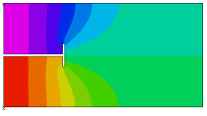

|
waveguide |

  
|
|
waveguide |
|
{ WAVEGUIDE.PDE
This problem solves for the Transverse-Electric modes of a T-septate
rectangular waveguide.
Assuming that Z is the propagation direction, we can write
E(x,y,z) = E(x,y)*exp(i*(omega*t-Kz*z))
H(x,y,z) = H(x,y)*exp(i*(omega*t-Kz*z))
where omega is the angular frequency and kz denotes the propagation constant.
In a Transverse-Electric waveguide, the electric field component in the propagation
direction is zero, or Ez = 0.
Substituting these equations into the source-free Maxwell's equations and rearranging,
we can write
Ey = -(omega*mu/kz)*Hx
Ex = (omega*mu/kz)*Hy
Hx = -i*dx(Hz)*kz/kt
Hy = i*dy(Hz)*kz/kt
with kt = [omega^2*eps*mu - kz^2]
It can also be shown that in this case Hz satisfies the homogeneous Helmholtz equation
dxx(Hz) + dyy(Hz) + Kt^2*Hz = 0
together with the homogeneous Neumann boundary condition on the conducting wall
dn(Hz) = 0
In order to avoid clutter in this example script, we will supress the proportionality factors.
(The leading "i" in the definition of Hx and Hy is merely a phase shift.)
----- From J. Jin, "The Finite Element Method in Electromagnetics", p. 197
}
title "TE Waveguide"
select
modes = 4 { This is the number of Eigenvalues desired. }
variables hz
definitions L = 2 h = 0.5 ! half box height g = 0.01 ! half-guage of wall s = 0.3*L ! septum depth tang = 0.1 ! half-width of tang Hx = -dx(Hz) Hy = dy(Hz) Ex = Hy Ey = -Hx
equations |
 |
Hz: del2(Hz) + lambda*Hz = 0 { lambda = Kt^2 }
constraints
integral(Hz) = 0 { since Hz has only natural boundary conditions,
we need an additional constraint to make
the solution unique }
boundaries
region 1
start(0,0)
natural(Hz) = 0 ! this condition applies to all subsequent segments
! walk the box body
line to (L,0) to (L,1) to (0,1) to (0,h+g)
! walk the T-septum
to (s-g,h+g) to (s-g,h+g+tang) to (s+g,h+g+tang)
to (s+g,h-g-tang) to (s-g,h-g-tang) to (s-g,h-g) to (0,h-g)
line to close
monitors
contour(Hz)
plots
contour(Hz) painted
vector(Hx,Hy) as "Transverse H" norm
vector(Ex,Ey) as "Transverse E" norm
end